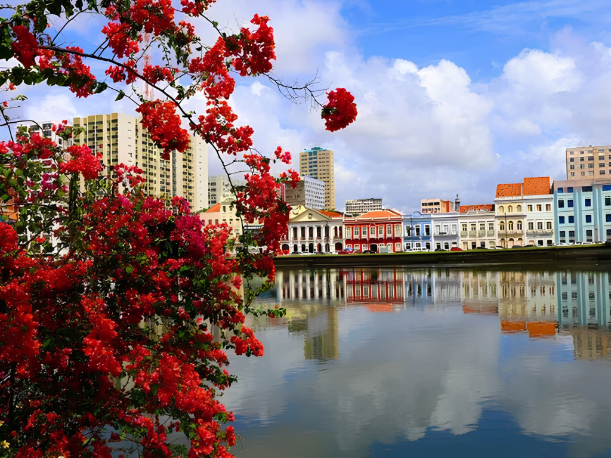

Pernambuco é um estado da região Nordeste do Brasil conhecido por sua grande importância histórica, riqueza cultural e belas paisagens naturais. Sua capital é Recife, uma das principais cidades nordestinas, famosa pelos rios, pontes e intensa vida cultural. Pernambuco teve papel marcante na história do Brasil colonial e se destaca por manifestações culturais tradicionais como o frevo, o maracatu e o carnaval pernambucano, especialmente em Olinda, cidade histórica reconhecida pela UNESCO. A economia do estado é diversificada, envolvendo turismo, comércio, indústria e tecnologia. O litoral pernambucano possui praias muito conhecidas, como Porto de Galinhas, destino turístico famoso pelas piscinas naturais. A culinária local também é bastante rica, com pratos típicos como bolo de rolo, carne de sol e caldinho de feijão.
